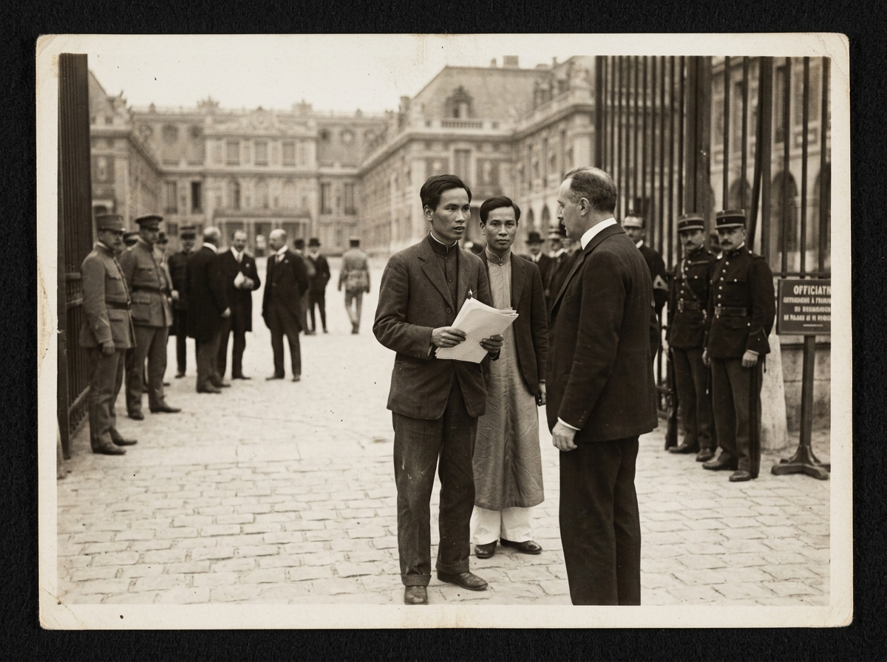

ĐIỂM TƯ LIỆU 01 // NĂM 1919
Khát Vọng & Quyền Thiêng Liêng
Bản Yêu sách của nhân dân An Nam tại Hội nghị Versailles
Khám phá tư liệu ➔
ĐIỂM TƯ LIỆU 02 // NĂM 1945
Tự Do & Hạnh Phúc
Độc lập phải gắn liền với ấm no, tự do, hạnh phúc của nhân dân
Khám phá tư liệu ➔
ĐIỂM TƯ LIỆU 03 // BẢN CHẤT
Độc Lập Hoàn Toàn & Triệt Để
Vạch trần chiêu bài độc lập giả hiệu, tự quyết mọi phương diện
Khám phá tư liệu ➔
ĐIỂM TƯ LIỆU 04 // TOÀN VẸN
Thống Nhất & Toàn Vẹn
Nước Việt Nam là một, dân tộc Việt Nam là một, non sông liền một dải
Khám phá tư liệu ➔
BẢNG ĐIỀU PHỐI NGUỒN LỰC XÃ HỘI
Kéo 4 thanh trượt phân bổ vừa đúng 100 Điểm Nguồn Lực (ĐNL)
 CHÍNH TRỊ
CHÍNH TRỊ
 KINH TẾ
KINH TẾ
 VĂN HÓA
VĂN HÓA
 XÃ HỘI
XÃ HỘI
Thử nghiệm các định hướng ưu tiên:
BẢNG ĐÁNH GIÁ MÔ HÌNH THỜI GIAN THỰC
HỆ THỐNG CHỜ PHÂN BỔ NGUỒN LỰC
CHƯA PHÂN BỔ ĐỦ 100 ĐNL
Kéo các thanh trượt bên trái hoặc bấm vào các nút kịch bản để quan sát hệ thống phân tích và đánh giá phản hồi ngay lập tức.